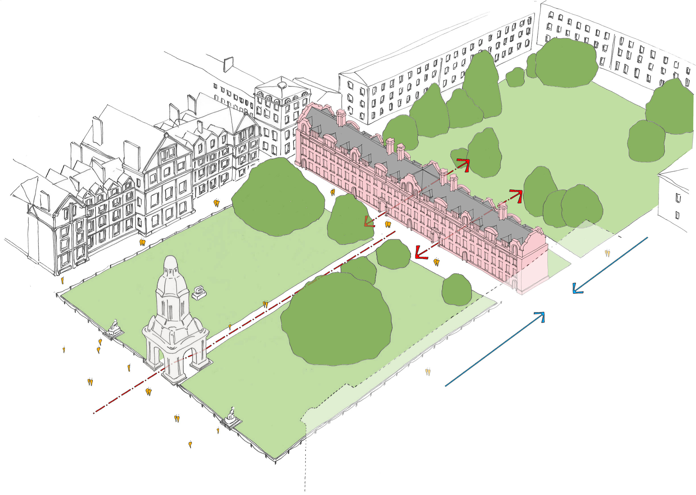

The Geography Building at Trinity College Dublin is constructed using a combination of traditional and modern materials, reflecting both its historical setting and functional purpose. The primary materials include:
- Red Brick – The primary construction material, giving the building its distinctive appearance. These bricks were likely handmade and fired using local clay, a common practice in 17th-century Dublin.
- Limestone– Used for structural elements such as window sills, door surrounds, and foundation reinforcements. Irish limestone was widely used in historic buildings for its strength and availability.
- Slate Roof – The roof is covered with slate tiles, which were commonly sourced from Irish quarries. Slate provides weather resistance and longevity.
- Timber – Used extensively in the interior for flooring, staircases, doors, and roof structures. Oak and pine were commonly used, offering durability and stability.
- Wrought Iron– Found in some decorative elements, such as railings and window fastenings, adding both function and ornamentation.
These materials were chosen for their strength, availability, and ability to withstand Ireland’s damp climate, ensuring the Rubrics' long-term preservation.


.png)
.png)